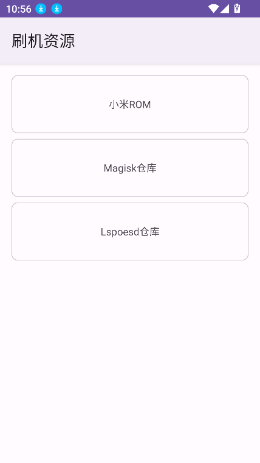

翻了 Toolkit 底朝天：不刷机体验系统、Unicode 乱码定位，这 4 个功能藏得真深
Toolkit 工具箱不止是个刷机资源下载器——我把它从 DSU Sideloader 到实用功能翻了个遍，发现它藏着能不动原分区就体验 GSI 的访客系统、Unicode 乱码定位、权限按需回收等几个几乎没人用的冷门能力，每个都在特定场景下省大麻烦。
你以为 Toolkit 工具箱就是个刷机资源下载器？ROM、GSI 镜像、Magisk 模块一应俱全，toolkit官网上列着的功能远不止这些，下载完 fastboot flash 然后变砖——这是大多数人对它的认知。但我把它从 DSU Sideloader 板块到实用工具角落翻了个底朝天，发现它藏着几个官方文档里轻描淡写、几乎没人去深挖的功能。每个都算不上"常用"，但真遇到场景的时候，省的不是一两个小时的事。
DSU Sideloader：不刷机子就体验 GSI
第一个要挖的就是 DSU Sideloader 板块。说真的，我刚看到这个板块的时候以为又是个常规的 GSI 刷写工具——不就是把镜像推到分区里吗？但仔细看它的机制才发现，这根本不是刷机。DSU 是 Android 10 引入的动态分区方案里的一套"访客系统"机制：访客系统跑在单独的动态分区里，原系统分区完全不参与。换个通俗点的说法，这就像在你电脑上开了个虚拟机——你在里面瞎搞什么都不会影响宿主系统。
藏得深的地方在于：Android 原生从 Android 11 开始才在开发者选项里暴露了 DSU Loader 入口，而且界面极其简陋——就是个让你选镜像文件的按钮，连进度条都没有。Toolkit 把这个原生能力做成了完整的图形化板块，镜像选择、进度追踪、环境校验一应俱全。更关键的是，它把 DSU 的前置条件（Android 10+、动态分区支持、Bootloader 解锁）做成了自检，让你在动手前就能知道自己的设备能不能跑，而不是镜像下完了才发现刷不了。
什么人用得上？想体验 AOSP、LineageOS、Pixel Experience 这类第三方 GSI，但又不想真刷机、不想承担变砖风险的人——尤其是那些刚玩机还不熟 fastboot 命令的新手。还有想先试一个 ROM 好不好用再决定要不要真刷的老司机，毕竟真刷回去要清数据，试错成本高。
什么人可以无视？已经真刷机、自己有 recovery、fastboot 熟得很的人。DSU 本质上是"安全网"，不是替代真刷机的。

重启即回：DSU 的安全网被严重低估
紧接着 DSU 板块要挖第二个隐藏点：它的重启即回机制。这个其实是 DSU 整个方案的安全底线，但几乎没人知道。大多数人刷 GSI 的心理阴影来自 fastboot flash 之后变砖的恐惧——刷错镜像、刷错分区、Bootloader 锁回去之后进不了系统，每一步都在玩火。但 DSU 路线完全不一样：访客系统里无论你做什么（哪怕系统崩溃、无限重启），只需要一次电源键重启，就能干干净净回到原系统。
这个机制藏得真深，深到什么程度？我在 Toolkit 里翻了三遍才在板块底部的一个小折叠区找到说明。原生 Android 的 DSU Loader 甚至根本不提这个能力——你得自己查 Android Developers 文档才知道。
还有个进阶玩法：社区同名开源 DSU 工具提供过 sticky 模式，能让访客系统跨重启保留，不需要每次都重新加载。Toolkit 内是否实现了这个，以应用内实际为准——但哪怕没有，光"重启即回"这一个特性就值回票价。
Unicode 乱码定位：文本转换里最冷门也最有用的用法
从刷机板块跳到实用功能，藏得最深的小工具就是文本转换里的 Unicode 字符级转换。大多数人用文本转换就是 Hex 互转——看日志里一串十六进制想知道是什么文字，或者反过来把文字转成十六进制存起来。但 Unicode 转换才是真正的杀手级用法：当你遇到乱码的时候，普通 Hex 互转根本看不出问题在哪，因为乱码可能是编码问题也可能是字符本身的问题。用 Unicode 转换把乱码文本拆成一个个码点，你就能精准定位到是哪个字符出了问题——是某个 Emoji 不兼容、是中日韩统一表意文字里的生僻字、还是干脆就是一串乱码字节。
这个功能藏在哪？实用功能板块 → 文本转换 → 选类型的时候拉到最底下才看得到 Unicode 选项。官方文档里用了一句话带过，几乎没人会去试。
什么场景真有用？玩机过程中看系统日志、看 Magisk 模块的配置文件、甚至和机圈朋友用 Telegram 传文本消息出现乱码的时候，这都是高频场景。
所有文件访问权限按需回收：权限安全小技巧
从toolkit下载装上应用的第一分钟，你就会遇到那个吓人的"所有文件访问权限"请求——大多数人的反应是要么直接授权要么直接拒，很少有人知道这个权限可以动态开关。Toolkit 要这个权限是真干活的：下载 1GB 以上的 ROM 镜像、刷 Magisk/LSPosed 模块、文本转换涉及文件读写，都需要访问整个共享存储。但授权之后，这个应用就一直在你手机里拥有最高级的文件权限，很多介意隐私的人就卡在这里了。
其实解决办法很简单：用完工具箱之后（镜像下完了、模块刷好了、文本也转完了），去系统设置 → 应用管理 → Toolkit → 权限 → 文件访问权限，直接关掉。下次要用的时候再打开就行。我自己就这样用了大半年，完全没有任何功能损失，也不用担心权限一直挂着。
这个小技巧藏得深的原因：toolkit文档里提了一句"授权前后都可以在系统设置的权限管理里查看和撤销该权限"，但放在了一个几乎没人会读的小节里——所有人都在关心怎么刷机、怎么下镜像，谁会去读权限说明？

别踩的坑：编码≠加密
最后说一个容易踩的坑。文本转换工具里的 Base32、Base58 经常被人拿去"加密"——比如有人把敏感信息转成 Base58 存在手机里，以为这样别人就看不懂了。但其实 Base 系列只是编码，不是加密：它只是把文本换了一种写法，谁拿到都能原路解回来。Toolkit 的官方文档里也特意提醒了这一点，但……你能指望多少人读完官方文档？
收尾
四个功能挖下来，我对 Toolkit 的看法彻底变了。它不是一个简单的刷机资源聚合器，它里面藏着一套完整的 DSU 体验方案（原生 Android 藏得更深），还有几个真正在玩机场景里省大麻烦的小工具。遗憾的是，官方文档的重心几乎全在"怎么下载 ROM"和"怎么刷 GSI"上，这些隐藏功能就像被遗忘在角落里。
把它用透，而不是只用它最显眼的那几个按钮——这大概是我挖完之后最深的感受。Toolkit 的这套资料在三个仓库都能拿到：GitHub主仓库更新最快，国内访问走 Gitee 或 GitCode 体验更顺畅。